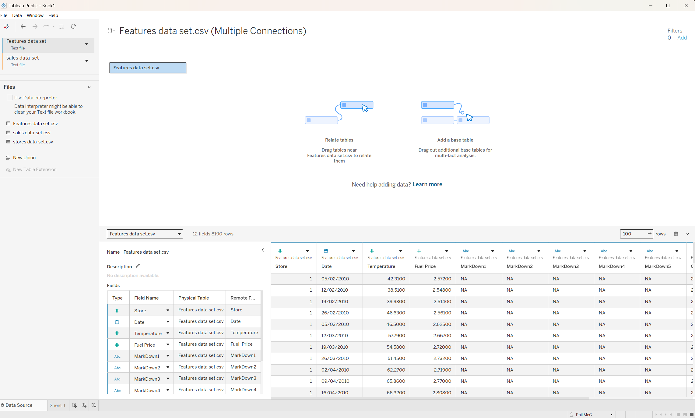
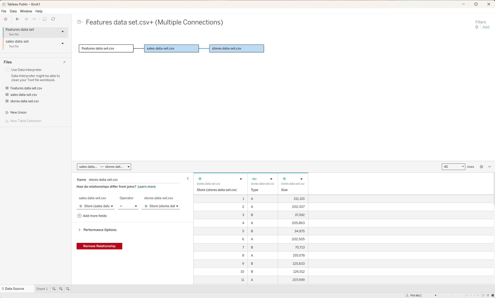

The Retail model
Three tables, three jobs
Keys and grain
What does “linked” mean?
A relationship uses one or more common columns as matching fields. Those columns are often called a key. The key is not a magical ID stored separately; it is simply the field or combination of fields that lets Tableau find corresponding records.
| Table | One row represents | Relationship field |
|---|---|---|
| Features | One store on one week | Store + Date |
| Sales | One store, department and week | Store + Date to Features; Store to Stores |
| Stores | One store | Store |
Relationship versus join
Why Tableau does not simply merge everything
Relationship
Defines how tables fit without flattening them first. Tableau can combine the relevant fields when a worksheet needs them, while preserving each table’s level of detail.
logical model
Join
Creates a fixed combined row structure. Useful when grains genuinely match, but dangerous when a weekly context row is repeated across department-level sales.
physical merge
Union
Appends rows from tables with the same column structure. It is not the right operation for Features, Sales and Stores.
append rows
In your workbook, the blue boxes and lines on the top Data Source canvas are the logical relationship model. If you open a table and see another canvas inside it, you are looking at the physical join layer instead.
Official context: Don't Be Scared of Relationships ↗ and Plan the Data Source ↗.
Relationship settings
What the cardinality and matching options tell Tableau
| Setting | Retail choice | Plain-English interpretation |
|---|---|---|
| Features ↔ Sales cardinality | Many-to-many | One weekly Features record can relate to many department sales records, and the model should not assume a one-to-one match. |
| Sales ↔ Stores cardinality | Many-to-one | Many sales rows belong to one store lookup row. |
| Referential integrity | Some records match on Sales; all records match on Stores | Sales may contain rows without a matching lookup record, while every Stores row is expected to be represented in Sales. |
Validation
Before you build a chart
- Confirm the three logical boxes are Features — Sales — Stores.
- Click the Features–Sales line and check
Store = StoreandDate = Date. - Click the Sales–Stores line and check
Store = Store. - Check that fields appear under their original tables in the worksheet Data pane.
- When you eventually use a field from another table, compare a known total before and after adding it.
Do it in Tableau
Load the three CSV files into a new workbook
This is the hands-on route that takes you from an empty Tableau Public workbook to the model described above. Start here when the workbook has no data in it yet.
1. Start on the Connect page
- Open Tableau Public and choose New Workbook.
- On the Connect page, under To a File, select Text file.
- Browse to the folder containing the three retail CSV files and select
Features data set.csv.
Tableau now opens the Data Source page. You should see a blue logical table box for Features and a list headed Files on the left.
2. Add the other two files from the Files list
Do not look for a second connection button for this exercise. Once Features is loaded, use the Files list on the left:
- Drag
sales data-set.csvonto the logical canvas near the Features box. - When Tableau creates a relationship, set
Store = StoreandDate = Date. - Drag
stores data-set.csvonto the canvas near Sales. - For that relationship, set
Store = Store.
Store in the relationship editor is a column name (a field), not the Stores table. The table is called stores data-set.csv.

Store (sales data-set.csv) = Store (stores data-set.csv).3. Finish the relationship without hunting for a button
There is no separate Done, Finish or Accept button in this relationship editor. Once the correct fields appear on both sides of the equals sign, the relationship is set. Click another table or an empty part of the canvas to leave the editor, then check the line between the boxes.
The expected logical model is:
4. Move from Data Source to the worksheet
- Click Sheet 1 at the bottom left.
- Tableau opens the worksheet workspace. The Data pane should contain the fields from the related tables.
- Only now begin dragging fields onto Rows, Columns, the Marks card or the view.
The first Connect-page screen is described in words here because the supplied captures begin after Features has already been loaded. If you want the guide to show that exact first screen too, take a Win + Shift + S capture while the Connect page is visible and add it beside the first screenshot.